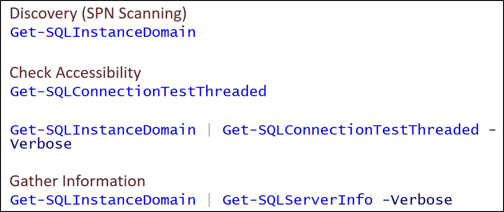

MSSQL Server
I server MSSQL sono generalmente ritrovabili
in molti domini di tipo Windows.
I server SQL permettono di ottenere diverse opzioni per
il Lateral Movement: questo perché i Domain users
possono essere mappati in ruoli del database.
Per hacking SQL, useremo il tool PowerUpSQL:
https://github.com/NetSPI/PowerUpSQL



Oppure:

Per controllare i permessi:

Database Links
Un DB Link permette al SQL Server di accedere a risorse esterne,
come altri SQL Server ed OLE DB.
In caso di DB Links tra SQL Servers è possibile eseguire
stored procedures (query già salvate, in pratica).
I DB Links funzionano perfino attraverso le Forest Trusts!
NB: Per usare la query sotto, connettiti al DB tramite un client
come HeidiSQL ed esegui la query!